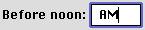

Keyboard Navigation and Focus
In a dialog box, the user can navigate through the interface elements that accept keyboard input, such as edit text fields and list boxes, in several ways. The user can click the desired element or press the Tab key to cycle through the available elements (a feature known as keyboard navigation). The user can move backward through the available elements by pressing the combination Shift-Tab.When a dialog box contains more than one element that can accept input from the keyboard, it's necessary to indicate to users which element has keyboard focus. This is done by drawing a focus ring around the control. (Under platinum appearance, the default ring is lavender, but the user can choose a different color in the Appearance Settings control panel.) Figure 3-11 shows an edit text field with a focus ring.
Figure 3-11 Edit text field with focus ring

A control with keyboard focus receives all keystrokes. Therefore, there should be only one active control and only one focus ring at any time. If a dialog box has only one control which can accept keyboard input, it's not necessary to provide a focus ring.